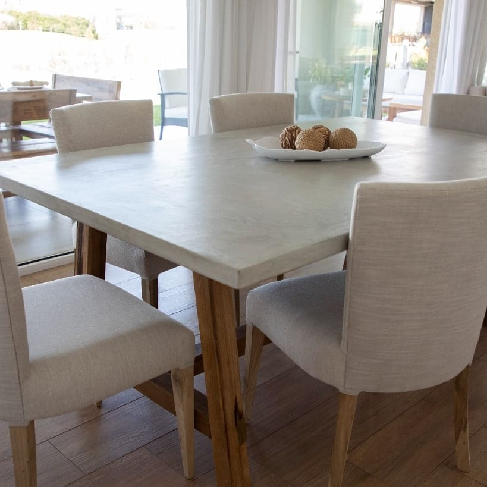
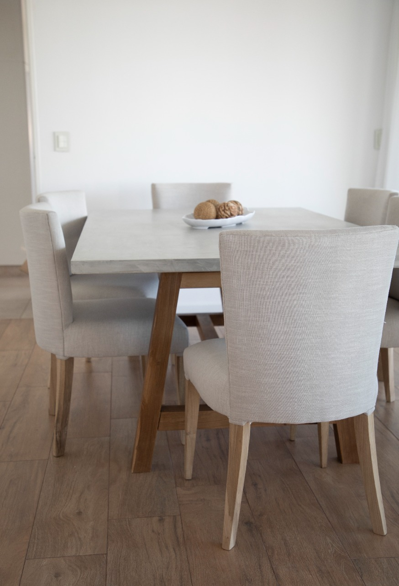
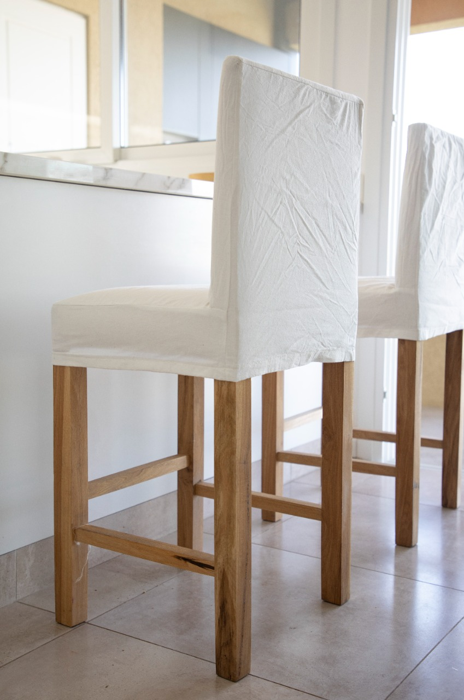

Sillas de Petiribí
Estructura maciza de Petiribí con tapizado base en lienzo. Diseño ergonómico y calidez natural para tu comedor.

Estructura maciza de Petiribí con tapizado base en lienzo. Diseño ergonómico y calidez natural para tu comedor.

Estética impecable y funcionalidad. Fundas desmontables de género Tusor en variedad de colores para un lavado práctico.

Ideales para barras y desayunadores. Estructura robusta de Petiribí con fundas a medida que aportan un toque rústico y chic.
CONSULTAR POR WHATSAPP